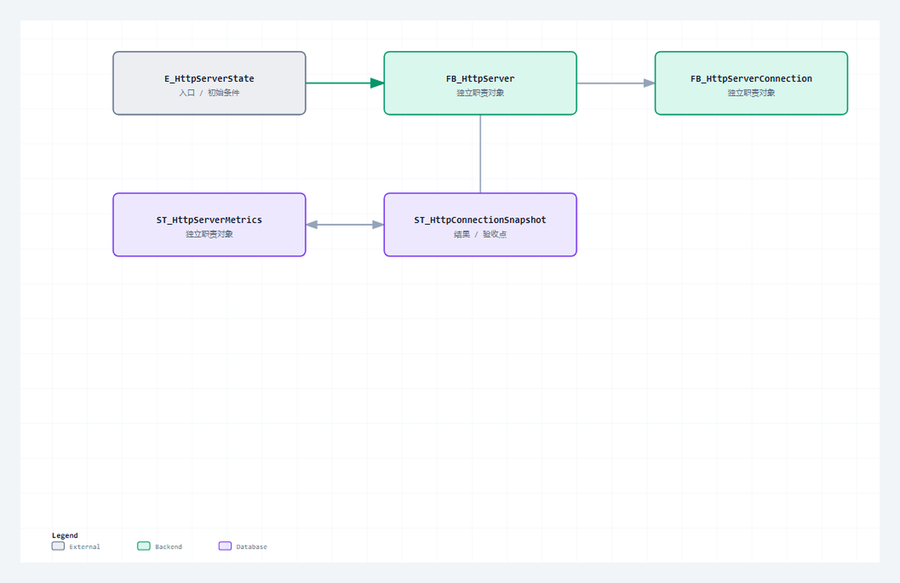

Server 外层负责监听和多槽位调度，单连接 FB 负责 Read、解析、路由、构造、Write 与清理。两个层级必须一起公开才能看清生命周期。
适合谁收藏
- 准备复用本组源码并审查对象边界的工程师。
- 需要把公开代码装配进目标 CodeSys 工程的人。
- 准备重新完成编译、离线测试和真机验证的读者。
本篇完整公开 6 个 ST 文件。代码直接读取已验证工程，保留声明、实现、注释和缩进；没有伪代码，没有跨文件拼接，也没有省略号。
先给结论
Server 外层负责监听和多槽位调度，单连接 FB 负责 Read、解析、路由、构造、Write 与清理。两个层级必须一起公开才能看清生命周期。 本篇的通过标准不是“代码已经贴出”，而是每个文件的职责、调用位置、状态边界和验证入口都能对应起来，并且完整代码可逐字回查源文件。

读图重点
先找到 E_HttpServerState 在本组中的位置，再沿图确认其余对象分别承担数据、状态、执行或诊断职责。图只给阅读顺序，最终判断必须回到下面的完整 ST 代码。
先看文件职责
| 序号 | 文件 | 职责 | 行数 |
|---|---|---|---|
| 1 | E_HttpServerState.st | Server 外层状态 | 13 |
| 2 | E_HttpConnectionState.st | Server 单连接状态 | 13 |
| 3 | FB_HttpServer.st | 监听和多槽位调度 | 364 |
| 4 | FB_HttpServerConnection.st | 单连接请求响应闭环 | 851 |
| 5 | ST_HttpServerMetrics.st | Server 运行指标 | 11 |
| 6 | ST_HttpConnectionSnapshot.st | 连接槽位快照 | 13 |
阅读顺序不是按文件名机械展开。先看数据和状态，再看公开方法，最后顺着错误出口和调用对象检查边界。源码篇的目标是让读者能对照工程复现，不是用大段代码制造篇幅。
从协议约束到代码职责
协议约束
Server 外层负责监听和多槽位调度，单连接 FB 负责 Read、解析、路由、构造、Write 与清理。两个层级必须一起公开才能看清生命周期。 协议层只定义消息与状态成立的条件，工程层还必须把条件分配给确定对象，避免 Parser、Builder、Server、Client 和测试入口互相越权。
对象分工
- 第 1 个对象
E_HttpServerState.st：承担“Server 外层状态”。阅读时先确认输入与公开输出，再追状态、长度和错误出口，最后核对它被谁周期调用或被哪个对象消费。 - 第 2 个对象
E_HttpConnectionState.st：承担“Server 单连接状态”。阅读时先确认输入与公开输出，再追状态、长度和错误出口，最后核对它被谁周期调用或被哪个对象消费。 - 第 3 个对象
FB_HttpServer.st：承担“监听和多槽位调度”。阅读时先确认输入与公开输出，再追状态、长度和错误出口，最后核对它被谁周期调用或被哪个对象消费。 - 第 4 个对象
FB_HttpServerConnection.st：承担“单连接请求响应闭环”。阅读时先确认输入与公开输出，再追状态、长度和错误出口，最后核对它被谁周期调用或被哪个对象消费。 - 第 5 个对象
ST_HttpServerMetrics.st：承担“Server 运行指标”。阅读时先确认输入与公开输出，再追状态、长度和错误出口，最后核对它被谁周期调用或被哪个对象消费。 - 第 6 个对象
ST_HttpConnectionSnapshot.st：承担“连接槽位快照”。阅读时先确认输入与公开输出，再追状态、长度和错误出口，最后核对它被谁周期调用或被哪个对象消费。
装配与验证
这组文件必须作为一个职责单元阅读和编译。先用确定输入验证“监听器与连接槽分层”，再制造非法或容量边界验证“每个槽位独立缓冲和错误”，最后在真实通信或上层调用中确认“Metrics 与 Snapshot 为真机排障保留证据”。如果单文件测试通过但装配后失败，应优先检查结构体、常量、状态枚举和周期调用关系，而不是立即重写核心算法。源码完整公开只证明读者拿到了同一事实源，目标运行时是否通过仍需重新编译和真机取证。
本篇从 E_HttpServerState.st 开始审查：先确认“监听器与连接槽分层”对应的类型、常量或公开输入，再沿 CASE 或方法调用追踪成功路径，随后逐个检查容量、超时和协议错误出口，最后在 ST_HttpConnectionSnapshot.st 对应的结果或装配位置确认错误能被观测、清理并再次执行。这个顺序专门用来区分“算法正确但没有周期调用”“状态能完成但错误被覆盖”和“Metrics 与 Snapshot 为真机排障保留证据尚未形成验证证据”三类问题。只有本篇源码、装配和验证使用同一组对象与同一组边界，完整开源才具有可复现意义。
本篇完整开源代码
下面按职责顺序给出本篇全部 ST 文件。每个代码块保留完整声明与实现；阅读时把状态、长度、错误出口和调用对象与上面的职责表逐项对照。
完整源码 1：E_HttpServerState.st
职责：Server 外层状态
/// 功能 : HTTP Server 状态枚举。
/// 库依赖 : 暂无
{attribute 'qualified_only'}
{attribute 'strict'}
TYPE E_HttpServerState :
(
iDisabled := 0,
iInit := 1,
iListen := 2,
iRunning := 3,
iFault := 4
) INT;
END_TYPE完整源码 2：E_HttpConnectionState.st
职责：Server 单连接状态
/// 功能 : HTTP Server 单连接状态枚举。
/// 库依赖 : 暂无
{attribute 'qualified_only'}
{attribute 'strict'}
TYPE E_HttpConnectionState :
(
iEmpty := 0,
iReceive := 1,
iRespond := 2,
iClosing := 3,
iFault := 4
) INT;
END_TYPE完整源码 3：FB_HttpServer.st
职责：监听和多槽位调度
/// 功能 : 基于 NBS 的 HTTP Server。
/// 库依赖 : CAA Net Base Services
{attribute 'hide_all_locals'}
FUNCTION_BLOCK FB_HttpServer
VAR_INPUT
xEnable : BOOL := FALSE; // CODESYS 风格 Server 使能。
xReset : BOOL := FALSE; // 复位命令，TRUE 时清空状态和诊断。
xCloseConnection : BOOL := FALSE; // 响应后主动关闭连接，TRUE 为短连接。
bEnable : BOOL := FALSE; // 兼容旧接口的 Server 使能。
sBindIP : STRING := '0.0.0.0'; // 监听网口 IP，0.0.0.0 表示任意网卡。
uiPort : UINT := GVL_Http.cnDefaultServerPort; // 监听端口。
uiResponseStatusCode: UINT := 200; // 自定义响应状态码，0 时使用内置路由默认值。
sResponseBody : STRING(GVL_Http.cnMaxBodySize) := ''; // 自定义响应 body，空时使用内置路由默认值。
sResponseContentType: STRING(96) := GVL_Http.cnDefaultContentType; // 自定义响应 Content-Type。
sAdditionalHeader : STRING(GVL_Http.cnMaxHeaderSize) := ''; // 自定义响应 Header 行，不包含结尾空行。
udiNowMs : UDINT := 0; // 外部毫秒时钟。
END_VAR
VAR_OUTPUT
xListening : BOOL; // CODESYS 风格监听状态。
xRunning : BOOL; // CODESYS 风格运行状态。
xBusy : BOOL; // CODESYS 风格忙状态。
xError : BOOL; // CODESYS 风格错误状态。
bListening : BOOL; // 已获得监听句柄。
bRunning : BOOL; // Server 正在运行。
bBusy : BOOL; // 正在初始化或等待监听。
bError : BOOL; // 错误锁存。
diErrorID : DINT; // 错误诊断码。
sDiagMsg : STRING(255); // 诊断文本。
eLastNbsError : NBS.ERROR; // 最近一次 NBS 错误。
eState : E_HttpServerState; // Server 状态机。
eLastError : E_HttpError; // 最近一次 HTTP 错误。
stMetrics : ST_HttpServerMetrics; // 运行统计。
uiActiveConnections : UINT; // 活跃连接数。
uiLastErrorSlot : UINT; // 最近错误槽位。
uiLastRequestSlot : UINT; // 最近请求槽位。
sRequestTarget : STRING(GVL_Http.cnMaxTargetLen); // 最近请求路径。
sRequestBody : STRING(GVL_Http.cnMaxBodySize); // 最近请求 body。
sRxMessage : STRING(GVL_Http.cnMaxMessageSize); // 最近一次接收报文文本。
sTxMessage : STRING(GVL_Http.cnMaxMessageSize); // 最近一次发送报文文本。
sLastTarget : STRING(GVL_Http.cnMaxTargetLen); // 最近请求路径。
sLastBody : STRING(GVL_Http.cnMaxBodySize); // 最近请求 body。
hListenHandle : NBS.CAA.HANDLE; // 监听句柄快照。
aConnectionSnapshots : ARRAY[1..GVL_Http.cnMaxClientSlots] OF ST_HttpConnectionSnapshot; // 连接快照。
END_VAR
VAR
fbServer : NBS.TCP_Server; // NBS TCP_Server 实例。
aTcpAccept : ARRAY[1..GVL_Http.cnMaxClientSlots] OF NBS.TCP_Connection; // 接入槽位。
aConnections : ARRAY[1..GVL_Http.cnMaxClientSlots] OF FB_HttpServerConnection; // HTTP 连接槽位。
ipBindAddr : NBS.IP_ADDR; // 监听 IP。
hServer : NBS.CAA.HANDLE; // 监听句柄。
hCleanup : NBS.CAA.HANDLE; // 清理连接句柄。
uiSlotIndex : UINT; // 槽位索引。
uiActiveCount : UINT; // 活跃连接计数。
eTcpError : NBS.ERROR; // NBS 错误。
bAcceptError : BOOL; // 接入错误汇总。
bRunEnable : BOOL; // 兼容旧接口和新接口后的实际使能。
END_VAR
// === IMPLEMENTATION ===
/// =======================================================================
/// 名称 : FB_HttpServer
/// 功能 : 基于 CAA Net Base Services 实现 HTTP Server 监听、多槽位调度和连接策略。
/// 库依赖 : CAA Net Base Services
/// =======================================================================
/// 使用说明 : 1. 每扫描周期调用一次，内部周期调用 TCP_Server/TCP_Connection/Read/Write。
/// : 2. xCloseConnection 控制短连接或顺序长连接，内置路由为 `/api/ping`、`/api/echo`、`/api/status`。
/// =======================================================================
// 工程说明：本段集中处理状态、边界或诊断，避免跨周期残留。
// 边界说明：执行前后保持输出和错误码可被在线诊断追踪。
// 原因：监听句柄只在 Running 状态对外暴露，避免外部脚本把初始化中的端口误判为可服务。
// 风险：NBS Server 和连接槽错误必须汇总到统一 Server 诊断，否则真实 client 只能看到连接关闭。
ipBindAddr.sAddr := sBindIP;
bRunEnable := xEnable OR bEnable;
IF xReset THEN
M_Reset();
END_IF
IF NOT bRunEnable THEN
fbServer(
xEnable := FALSE,
ipAddr := ipBindAddr,
uiPort := uiPort
);
FOR uiSlotIndex := 1 TO GVL_Http.cnMaxClientSlots DO
aTcpAccept[uiSlotIndex](
xEnable := FALSE,
hServer := hServer
);
aConnections[uiSlotIndex](
bEnable := FALSE,
xCloseConnection := xCloseConnection,
uiSlot := uiSlotIndex,
hConnectionIn := 0,
bConnectionActiveIn := FALSE,
uiResponseStatusCode:= uiResponseStatusCode,
sResponseBody := sResponseBody,
sResponseContentType:= sResponseContentType,
sAdditionalHeader := sAdditionalHeader,
udiNowMs := udiNowMs
);
aConnectionSnapshots[uiSlotIndex] := aConnections[uiSlotIndex].stConnection;
END_FOR
M_Reset();
RETURN;
END_IF
CASE eState OF
E_HttpServerState.iDisabled:
eState := E_HttpServerState.iInit;
E_HttpServerState.iInit:
hServer := 0;
hListenHandle := 0;
bError := FALSE;
eLastError := E_HttpError.iNoError;
sDiagMsg := '';
eState := E_HttpServerState.iListen;
E_HttpServerState.iListen,
E_HttpServerState.iRunning:
fbServer(
xEnable := TRUE,
ipAddr := ipBindAddr,
uiPort := uiPort,
eError => eTcpError
);
hServer := fbServer.hServer;
hListenHandle := hServer;
IF fbServer.xError THEN
eLastNbsError := eTcpError;
M_SetServerError(
eError := E_HttpError.iTcpServerFailed,
sMessage := 'TCP server listen failed'
);
eState := E_HttpServerState.iFault;
ELSIF hServer <> 0 THEN
eState := E_HttpServerState.iRunning;
M_AcceptNewConnection();
M_ServiceConnections();
END_IF
E_HttpServerState.iFault:
fbServer(
xEnable := FALSE,
ipAddr := ipBindAddr,
uiPort := uiPort
);
ELSE
eState := E_HttpServerState.iFault;
END_CASE
M_UpdateServerOutputs();
// === METHOD M_AcceptNewConnection ===
/// =======================================================================
/// 名称 : M_AcceptNewConnection
/// 功能 : 周期调用所有 NBS.TCP_Connection 接入槽位。
/// 说明 : 所有槽位每周期都调用，符合 NBS 电平触发语义。
/// =======================================================================
{attribute 'hide_all_locals'}
METHOD PRIVATE M_AcceptNewConnection
// === IMPLEMENTATION ===
// 工程说明：本段集中处理状态、边界或诊断，避免跨周期残留。
// 边界说明：执行前后保持输出和错误码可被在线诊断追踪。
bAcceptError := FALSE;
FOR uiSlotIndex := 1 TO GVL_Http.cnMaxClientSlots DO
aTcpAccept[uiSlotIndex](
xEnable := hServer <> 0,
hServer := hServer
);
IF aTcpAccept[uiSlotIndex].xActive THEN
IF (NOT aConnections[uiSlotIndex].bActive)
OR (aConnections[uiSlotIndex].stConnection.hConnection <> aTcpAccept[uiSlotIndex].hConnection) THEN
// 原因：接入阶段只绑定 NBS 句柄，读写统一留给 M_ServiceConnections；
// 避免新连接在同一扫描周期被 TCP_Read 调用两次，导致大 body 半包场景被误判为接收错误。
aConnections[uiSlotIndex].M_Attach(
hConnection := aTcpAccept[uiSlotIndex].hConnection
);
stMetrics.udiAcceptedConnections := stMetrics.udiAcceptedConnections + 1;
END_IF
END_IF
IF aTcpAccept[uiSlotIndex].xError THEN
bAcceptError := TRUE;
eTcpError := aTcpAccept[uiSlotIndex].eError;
uiLastErrorSlot := uiSlotIndex;
END_IF
END_FOR
IF bAcceptError THEN
eLastNbsError := eTcpError;
M_SetServerError(
eError := E_HttpError.iTcpServerFailed,
sMessage := 'TCP accept failed'
);
END_IF
// === METHOD M_ServiceConnections ===
/// =======================================================================
/// 名称 : M_ServiceConnections
/// 功能 : 周期服务所有 HTTP 连接槽位。
/// 说明 : 请求、响应、错误和清理均由连接 FB 输出聚合。
/// =======================================================================
{attribute 'hide_all_locals'}
METHOD PRIVATE M_ServiceConnections
// === IMPLEMENTATION ===
// 工程说明：本段集中处理状态、边界或诊断，避免跨周期残留。
// 边界说明：执行前后保持输出和错误码可被在线诊断追踪。
// 原因：每个连接槽都必须每周期服务，NBS 句柄状态变化可能发生在任意扫描周期。
// 诊断：最近请求槽、最近错误槽和连接快照用于外部探针复盘多连接真实通信路径。
uiActiveCount := 0;
FOR uiSlotIndex := 1 TO GVL_Http.cnMaxClientSlots DO
aConnections[uiSlotIndex](
bEnable := aConnections[uiSlotIndex].bActive,
xCloseConnection := xCloseConnection,
uiSlot := uiSlotIndex,
hConnectionIn := aConnections[uiSlotIndex].stConnection.hConnection,
bConnectionActiveIn := aConnections[uiSlotIndex].bActive,
uiResponseStatusCode:= uiResponseStatusCode,
sResponseBody := sResponseBody,
sResponseContentType:= sResponseContentType,
sAdditionalHeader := sAdditionalHeader,
udiNowMs := udiNowMs
);
IF aConnections[uiSlotIndex].bActive THEN
uiActiveCount := uiActiveCount + 1;
END_IF
IF aConnections[uiSlotIndex].bRequestReady THEN
uiLastRequestSlot := uiSlotIndex;
sLastTarget := aConnections[uiSlotIndex].stRequest.sTarget;
sLastBody := aConnections[uiSlotIndex].stRequest.sBody;
sRequestTarget := aConnections[uiSlotIndex].stRequest.sTarget;
sRequestBody := aConnections[uiSlotIndex].stRequest.sBody;
sRxMessage := aConnections[uiSlotIndex].sRxMessage;
stMetrics.udiRequestCount := stMetrics.udiRequestCount + 1;
END_IF
IF aConnections[uiSlotIndex].bResponseSent THEN
sTxMessage := aConnections[uiSlotIndex].sTxMessage;
stMetrics.udiResponseCount := stMetrics.udiResponseCount + 1;
END_IF
IF aConnections[uiSlotIndex].bProtocolError THEN
stMetrics.udiProtocolErrorCount := stMetrics.udiProtocolErrorCount + 1;
stMetrics.eLastError := aConnections[uiSlotIndex].eProtocolError;
uiLastErrorSlot := uiSlotIndex;
eLastError := aConnections[uiSlotIndex].eProtocolError;
sDiagMsg := aConnections[uiSlotIndex].sDiagMsg;
END_IF
IF aConnections[uiSlotIndex].bError THEN
stMetrics.udiProtocolErrorCount := stMetrics.udiProtocolErrorCount + 1;
stMetrics.eLastError := aConnections[uiSlotIndex].eLastError;
uiLastErrorSlot := uiSlotIndex;
eLastNbsError := aConnections[uiSlotIndex].eLastNbsError;
M_SetServerError(
eError := aConnections[uiSlotIndex].eLastError,
sMessage := aConnections[uiSlotIndex].sDiagMsg
);
END_IF
IF aConnections[uiSlotIndex].bNeedCleanup THEN
hCleanup := aConnections[uiSlotIndex].stConnection.hConnection;
aConnections[uiSlotIndex](
bEnable := FALSE,
xCloseConnection := xCloseConnection,
uiSlot := uiSlotIndex,
hConnectionIn := 0,
bConnectionActiveIn := FALSE,
uiResponseStatusCode:= uiResponseStatusCode,
sResponseBody := sResponseBody,
sResponseContentType:= sResponseContentType,
sAdditionalHeader := sAdditionalHeader,
udiNowMs := udiNowMs
);
aTcpAccept[uiSlotIndex](
xEnable := FALSE,
hServer := hServer
);
IF hCleanup = 0 THEN
;
END_IF
END_IF
aConnectionSnapshots[uiSlotIndex] := aConnections[uiSlotIndex].stConnection;
END_FOR
uiActiveConnections := uiActiveCount;
// === METHOD M_Reset ===
/// =======================================================================
/// 名称 : M_Reset
/// 功能 : 完整复位 Server 输出和状态。
/// 说明 : 禁用路径调用，不清除工程文件或库配置。
/// =======================================================================
{attribute 'hide_all_locals'}
METHOD PUBLIC M_Reset
// === IMPLEMENTATION ===
// 工程说明：本段集中处理状态、边界或诊断，避免跨周期残留。
// 边界说明：执行前后保持输出和错误码可被在线诊断追踪。
hServer := 0;
hListenHandle := 0;
xListening := FALSE;
xRunning := FALSE;
xBusy := FALSE;
xError := FALSE;
bListening := FALSE;
bRunning := FALSE;
bBusy := FALSE;
bError := FALSE;
diErrorID := 0;
sDiagMsg := '';
eState := E_HttpServerState.iDisabled;
eLastError := E_HttpError.iNoError;
uiActiveConnections := 0;
uiLastErrorSlot := 0;
uiLastRequestSlot := 0;
sRequestTarget := '';
sRequestBody := '';
sRxMessage := '';
sTxMessage := '';
sLastTarget := '';
sLastBody := '';
// === METHOD M_SetServerError ===
/// =======================================================================
/// 名称 : M_SetServerError
/// 功能 : 锁存 Server 错误。
/// 说明 : Server 级错误和连接槽位错误统一进入本出口。
/// =======================================================================
{attribute 'hide_all_locals'}
METHOD PRIVATE M_SetServerError : BOOL
VAR_INPUT
eError : E_HttpError := E_HttpError.iNoError; // 枚举状态或错误码。
sMessage : STRING(255) := ''; // 诊断或协议文本字段。
END_VAR
// === IMPLEMENTATION ===
// 工程说明：本段集中处理状态、边界或诊断，避免跨周期残留。
eLastError := eError;
stMetrics.eLastError := eError;
bError := TRUE;
diErrorID := TO_DINT(eError);
sDiagMsg := sMessage;
M_SetServerError := TRUE;
// === METHOD M_UpdateServerOutputs ===
/// =======================================================================
/// 名称 : M_UpdateServerOutputs
/// 功能 : 同步 Server 在线输出。
/// 说明 : hServer 非 0 代表监听句柄有效。
/// =======================================================================
{attribute 'hide_all_locals'}
METHOD PRIVATE M_UpdateServerOutputs
// === IMPLEMENTATION ===
// 工程说明：本段集中处理状态、边界或诊断，避免跨周期残留。
bListening := hListenHandle <> 0;
bRunning := eState = E_HttpServerState.iRunning;
bBusy := (eState = E_HttpServerState.iInit) OR (eState = E_HttpServerState.iListen);
xListening := bListening;
xRunning := bRunning;
xBusy := bBusy;
xError := bError;
diErrorID := TO_DINT(eLastError);完整源码 4：FB_HttpServerConnection.st
职责：单连接请求响应闭环
/// 功能 : 基于 NBS 的 HTTP Server 单连接处理。
/// 库依赖 : CAA Net Base Services
{attribute 'hide_all_locals'}
FUNCTION_BLOCK FB_HttpServerConnection
VAR_INPUT
bEnable : BOOL := FALSE; // 槽位使能。
xCloseConnection : BOOL := FALSE; // 响应后主动关闭连接，TRUE 时按短连接运行。
uiSlot : UINT := 0; // 槽位编号。
hConnectionIn : NBS.CAA.HANDLE := 0; // NBS TCP 连接句柄。
bConnectionActiveIn : BOOL := FALSE; // NBS TCP_Connection 活跃状态。
uiResponseStatusCode: UINT := 200; // 用户自定义响应状态码，0 时使用内置路由默认值。
sResponseBody : STRING(GVL_Http.cnMaxBodySize) := ''; // 用户自定义响应 body，空时使用内置路由默认值。
sResponseContentType: STRING(96) := GVL_Http.cnDefaultContentType; // 用户自定义响应 Content-Type。
sAdditionalHeader : STRING(GVL_Http.cnMaxHeaderSize) := ''; // 用户自定义响应 Header 行，不包含结尾空行。
udiNowMs : UDINT := 0; // 外部毫秒时钟。
END_VAR
VAR_OUTPUT
bActive : BOOL; // 槽位正在使用。
bBusy : BOOL; // 正在收请求或发响应。
bRequestReady : BOOL; // 单周期请求解析完成事件。
bResponseSent : BOOL; // 响应已发送。
bProtocolError : BOOL; // 单周期协议错误响应事件。
bNeedCleanup : BOOL; // Server 应清理槽位。
bError : BOOL; // 错误锁存。
diErrorID : DINT; // 错误诊断码。
sDiagMsg : STRING(255); // 诊断文本。
eLastNbsError : NBS.ERROR; // 最近一次 NBS 错误。
eLastError : E_HttpError; // 最近一次 HTTP 错误。
eProtocolError : E_HttpError; // 最近一次协议错误响应码。
sRxMessage : STRING(GVL_Http.cnMaxMessageSize); // 最近一次接收报文文本。
sTxMessage : STRING(GVL_Http.cnMaxMessageSize); // 最近一次发送报文文本。
stConnection : ST_HttpConnectionSnapshot; // 槽位快照。
stRequest : ST_HttpRequest; // 最近一次请求。
stResponse : ST_HttpResponse; // 最近一次响应。
END_VAR
VAR
fbTcpRead : NBS.TCP_Read; // NBS TCP_Read 实例，必须周期调用。
fbTcpWrite : NBS.TCP_Write; // NBS TCP_Write 实例，必须周期调用。
fbParser : FB_HttpMessageParser; // HTTP 请求解析器。
fbBuilder : FB_HttpMessageBuilder; // HTTP 响应构造器。
fbChunked : FB_HttpChunkedDecoder; // HTTP chunked body 解码器。
tonWrite : TON; // 写超时定时器。
aRxBuf : ARRAY[0..GVL_Http.cnRxBufferSize - 1] OF BYTE; // 接收缓冲。
aTxBuf : ARRAY[0..GVL_Http.cnTxBufferSize - 1] OF BYTE; // 发送缓冲。
sRequestText : STRING(GVL_Http.cnMaxMessageSize); // 请求文本。
sResponseText : STRING(GVL_Http.cnMaxMessageSize); // 响应文本。
uiWriteLen : UINT; // 待发送字节数。
uiWriteOffset : UINT; // 当前发送偏移。
uiWriteChunkLen : UINT; // 当前发送分块长度。
uiIndex : UINT; // 循环索引。
bWriteExecute : BOOL; // TCP_Write 执行位。
bWriteBusy : BOOL; // TCP_Write 忙状态。
bWriteDoneLatched : BOOL; // TCP_Write 完成锁存。
bWriteGapCycle : BOOL; // TCP_Write 分块间隔扫描。
eTcpError : NBS.ERROR; // 当前 NBS 错误。
uiTcpReadErrors : UINT; // TCP_Read 连续错误计数。
END_VAR
// === IMPLEMENTATION ===
/// =======================================================================
/// 名称 : FB_HttpServerConnection
/// 功能 : 服务端单连接收 HTTP 请求、生成响应并按连接策略关闭或复用。
/// 库依赖 : CAA Net Base Services
/// =======================================================================
/// 使用说明 : 1. 每个 TCP_Connection 槽位必须独立持有一个本 FB 实例。
/// : 2. xCloseConnection 为 FALSE 时允许同一连接顺序处理下一条请求，不支持 pipeline。
/// =======================================================================
// 工程说明：本段集中处理状态、边界或诊断，避免跨周期残留。
// 边界说明：执行前后保持输出和错误码可被在线诊断追踪。
// 原因：单连接 FB 独占接收和发送缓冲，避免多个 TCP 连接共享 STRING 缓冲导致报文串扰。
// 风险：连接失活必须转为清理请求，否则 NBS 句柄残留会让后续真机连接占满槽位。
bRequestReady := FALSE;
bResponseSent := FALSE;
bProtocolError := FALSE;
eProtocolError := E_HttpError.iNoError;
IF NOT bEnable THEN
IF stConnection.hConnection <> 0 THEN
fbTcpRead(
xEnable := FALSE,
hConnection := stConnection.hConnection,
szSize := 0,
pData := ADR(aRxBuf)
);
fbTcpWrite(
xExecute := FALSE,
hConnection := stConnection.hConnection,
szSize := 0,
pData := ADR(aTxBuf)
);
END_IF
tonWrite(
IN := FALSE,
PT := GVL_Http.cnWriteTimeout
);
M_Reset();
RETURN;
END_IF
IF (NOT stConnection.bUsed) OR (stConnection.hConnection <> hConnectionIn) THEN
M_Attach(
hConnection := hConnectionIn
);
END_IF
IF NOT bConnectionActiveIn THEN
bNeedCleanup := TRUE;
END_IF
CASE stConnection.eState OF
E_HttpConnectionState.iReceive:
M_ServiceRead();
M_ProcessRequest();
E_HttpConnectionState.iRespond:
M_ServiceWrite();
E_HttpConnectionState.iClosing:
bNeedCleanup := (NOT bWriteBusy) AND (NOT bWriteExecute);
E_HttpConnectionState.iFault:
bNeedCleanup := TRUE;
ELSE
bNeedCleanup := TRUE;
END_CASE
M_UpdateConnectionOutputs();
// === METHOD M_Attach ===
/// =======================================================================
/// 名称 : M_Attach
/// 功能 : 绑定新 TCP 连接句柄。
/// 说明 : 槽位复用前必须清空缓冲和诊断，避免上一连接数据串扰。
/// =======================================================================
{attribute 'hide_all_locals'}
METHOD PUBLIC M_Attach
VAR_INPUT
hConnection : NBS.CAA.HANDLE := 0; // 工程变量或诊断字段。
END_VAR
// === IMPLEMENTATION ===
// 工程说明：本段集中处理状态、边界或诊断，避免跨周期残留。
M_Reset();
stConnection.bUsed := TRUE;
stConnection.hConnection := hConnection;
stConnection.eState := E_HttpConnectionState.iReceive;
bActive := TRUE;
bNeedCleanup := FALSE;
// === METHOD M_ServiceRead ===
/// =======================================================================
/// 名称 : M_ServiceRead
/// 功能 : 从 TCP 连接读取请求字节。
/// 说明 : 只追加到剩余缓冲空间，解析器负责判断完整报文。
/// =======================================================================
{attribute 'hide_all_locals'}
METHOD PRIVATE M_ServiceRead
VAR
udiFreeBytes : UDINT; // 计数、长度或状态数值。
udiReadBytes : UDINT; // 本次 TCP_Read 允许读取的字节数。
END_VAR
// === IMPLEMENTATION ===
// 工程说明：本段集中处理状态、边界或诊断，避免跨周期残留。
// 边界说明：执行前后保持输出和错误码可被在线诊断追踪。
// 原因：长连接回到接收态后必须给 TCP_Write 一个禁用扫描，释放上一响应的写状态；
// 否则第二个顺序请求到达时，NBS 读写 FB 可能仍围绕同一句柄保留冲突状态。
fbTcpWrite(
xExecute := FALSE,
hConnection := stConnection.hConnection,
szSize := 0,
pData := ADR(aTxBuf)
);
udiFreeBytes := TO_UDINT(GVL_Http.cnRxBufferSize - stConnection.uiRxLength);
IF (stConnection.hConnection <> 0) AND (udiFreeBytes > 0) THEN
IF udiFreeBytes > TO_UDINT(GVL_Http.cnTcpReadChunkSize) THEN
udiReadBytes := TO_UDINT(GVL_Http.cnTcpReadChunkSize);
ELSE
udiReadBytes := udiFreeBytes;
END_IF
fbTcpRead(
xEnable := TRUE,
hConnection := stConnection.hConnection,
eError => eTcpError,
szSize := udiReadBytes,
pData := ADR(aRxBuf[stConnection.uiRxLength])
);
IF fbTcpRead.xReady AND NOT fbTcpRead.xError THEN
IF fbTcpRead.szCount > 0 THEN
uiTcpReadErrors := 0;
stConnection.uiRxLength := stConnection.uiRxLength + TO_UINT(fbTcpRead.szCount);
END_IF
ELSIF fbTcpRead.xError THEN
// 原因：NBS 在大 body 半包接收中可能短暂返回 TCP_RECEIVE_ERROR；
// 先做连续错误滤波，避免合法请求在后续字节到达前被误关闭。
IF uiTcpReadErrors < GVL_Http.cnTcpReadMaxErrorCount THEN
uiTcpReadErrors := uiTcpReadErrors + 1;
END_IF
IF uiTcpReadErrors >= GVL_Http.cnTcpReadMaxErrorCount THEN
eLastNbsError := eTcpError;
M_SetConnectionError(
eError := E_HttpError.iTcpReadFailed,
sMessage := 'TCP read failed'
);
stConnection.eState := E_HttpConnectionState.iFault;
END_IF
END_IF
ELSE
fbTcpRead(
xEnable := FALSE,
hConnection := stConnection.hConnection,
szSize := 0,
pData := ADR(aRxBuf)
);
END_IF
// === METHOD M_ProcessRequest ===
/// =======================================================================
/// 名称 : M_ProcessRequest
/// 功能 : 解析请求并生成固定路由响应。
/// 说明 : `/api/ping` 返回 pong，`/api/echo` 返回请求 body，其余返回 404。
/// =======================================================================
{attribute 'hide_all_locals'}
METHOD PRIVATE M_ProcessRequest
VAR
pRxBuf : POINTER TO BYTE; // 当前扫描周期使用的字节指针。
pBodyBuf : POINTER TO BYTE; // 当前请求 body 首字节指针。
uiHeaderBytes : UINT; // HTTP Header 总字节数。
uiBodyBytes : UINT; // 已接收 body 字节数。
uiExpectedBodyLen : UINT; // Content-Length 声明的 body 字节数。
sChunkedBody : STRING(GVL_Http.cnMaxMessageSize); // chunked body 临时文本。
bResponseQueued : BOOL; // 是否已经直接写入发送队列。
END_VAR
// === IMPLEMENTATION ===
// 工程说明：本段集中处理状态、边界或诊断，避免跨周期残留。
// 边界说明：执行前后保持输出和错误码可被在线诊断追踪。
// 原因：PLC STRING 标准函数在部分运行时存在约 255 字节处理边界，Server 入站 body 必须按 BYTE 缓冲判断完整性。
// 约束：Header 仍走 Parser 做协议校验，body 只在长度满足后复制或直接回显，避免半包被误判为完整请求。
uiHeaderBytes := M_FindHttpEnd();
IF uiHeaderBytes = 0 THEN
RETURN;
END_IF
pRxBuf := ADR(aRxBuf);
M_CopyBytesToString(
pSource := pRxBuf,
uiByteCount := uiHeaderBytes,
sTarget := sRequestText
);
sRxMessage := sRequestText;
fbParser.M_ParseRequestHead(
sMessage := sRequestText,
stRequest => stRequest
);
IF fbParser.bError AND (fbParser.eError = E_HttpError.iNeedMoreData) THEN
RETURN;
ELSIF fbParser.bError THEN
M_PrepareErrorResponse(
uiStatusCode := 400,
sBody := 'bad request'
);
ELSIF fbParser.bDone THEN
IF stConnection.uiRxLength >= uiHeaderBytes THEN
uiBodyBytes := stConnection.uiRxLength - uiHeaderBytes;
ELSE
uiBodyBytes := 0;
END_IF
IF stRequest.bTransferChunked THEN
IF uiBodyBytes > GVL_Http.cnMaxBodySize THEN
M_PrepareErrorResponse(
uiStatusCode := 413,
sBody := 'payload too large'
);
ELSE
IF uiBodyBytes > 0 THEN
pBodyBuf := ADR(aRxBuf[uiHeaderBytes]);
M_CopyBytesToString(
pSource := pBodyBuf,
uiByteCount := uiBodyBytes,
sTarget := sChunkedBody
);
ELSE
sChunkedBody := '';
END_IF
fbChunked.M_Decode(
sChunked := sChunkedBody,
sBody => stRequest.sBody
);
IF fbChunked.bError AND (fbChunked.eError = E_HttpError.iNeedMoreData) THEN
RETURN;
ELSIF fbChunked.bError THEN
M_PrepareErrorResponse(
uiStatusCode := 400,
sBody := 'bad chunked body'
);
ELSE
stRequest.udiContentLength := fbChunked.udiDecodedLength;
END_IF
END_IF
ELSIF stRequest.bHasContentLength THEN
uiExpectedBodyLen := TO_UINT(stRequest.udiContentLength);
IF uiBodyBytes < uiExpectedBodyLen THEN
RETURN;
END_IF
stRequest.sBody := '';
ELSE
stRequest.sBody := '';
stRequest.udiContentLength := 0;
END_IF
bRequestReady := TRUE;
stConnection.sLastTarget := stRequest.sTarget;
stResponse.bConnectionClose := xCloseConnection OR stRequest.bConnectionClose;
stResponse.sAdditionalHeader := sAdditionalHeader;
IF stRequest.sTarget = '/api/ping' THEN
M_PrepareOkResponse(
sBody := 'pong'
);
ELSIF stRequest.sTarget = '/api/echo' THEN
stResponse.sContentType := sResponseContentType;
stResponse.bConnectionClose := xCloseConnection OR stRequest.bConnectionClose;
stResponse.sAdditionalHeader := sAdditionalHeader;
IF stRequest.bHasContentLength THEN
pBodyBuf := ADR(aRxBuf[uiHeaderBytes]);
bResponseQueued := M_QueueBytesResponse(
pBody := pBodyBuf,
uiBodyLen := uiExpectedBodyLen
);
ELSE
pBodyBuf := ADR(stRequest.sBody);
bResponseQueued := M_QueueBytesResponse(
pBody := pBodyBuf,
uiBodyLen := TO_UINT(stRequest.udiContentLength)
);
END_IF
ELSIF stRequest.sTarget = '/api/status' THEN
M_PrepareOkResponse(
sBody := 'ok'
);
ELSIF LEN(sResponseBody) > 0 THEN
M_PrepareOkResponse(
sBody := sResponseBody
);
ELSE
M_PrepareErrorResponse(
uiStatusCode := 404,
sBody := 'not found'
);
END_IF
ELSE
RETURN;
END_IF
IF bResponseQueued THEN
stConnection.eState := E_HttpConnectionState.iRespond;
RETURN;
ELSIF bError THEN
stConnection.eState := E_HttpConnectionState.iFault;
RETURN;
END_IF
IF fbBuilder.M_BuildResponse(
stResponse := stResponse,
sMessage => sResponseText
) THEN
IF M_QueueRawString(
sText := sResponseText
) THEN
stConnection.eState := E_HttpConnectionState.iRespond;
END_IF
ELSE
M_SetConnectionError(
eError := fbBuilder.eError,
sMessage := fbBuilder.sDiagMsg
);
stConnection.eState := E_HttpConnectionState.iFault;
END_IF
// === METHOD M_PrepareOkResponse ===
/// =======================================================================
/// 名称 : M_PrepareOkResponse
/// 功能 : 准备 200 响应结构。
/// 说明 : body 文本由路由层给出，统一使用 text/plain 和短连接。
/// =======================================================================
{attribute 'hide_all_locals'}
METHOD PRIVATE M_PrepareOkResponse
VAR_INPUT
sBody : STRING(GVL_Http.cnMaxBodySize) := ''; // 诊断或协议文本字段。
END_VAR
// === IMPLEMENTATION ===
// 工程说明：本段集中处理状态、边界或诊断，避免跨周期残留。
stResponse.sVersion := 'HTTP/1.1';
stResponse.uiStatusCode := 200;
stResponse.sReason := 'OK';
IF LEN(sResponseContentType) > 0 THEN
stResponse.sContentType := sResponseContentType;
ELSE
stResponse.sContentType := GVL_Http.cnDefaultContentType;
END_IF
stResponse.sBody := sBody;
stResponse.sAdditionalHeader := sAdditionalHeader;
stResponse.bConnectionClose := xCloseConnection OR stRequest.bConnectionClose;
stResponse.bHasContentLength := TRUE;
stResponse.udiContentLength := TO_UDINT(LEN(sBody));
// === METHOD M_PrepareErrorResponse ===
/// =======================================================================
/// 名称 : M_PrepareErrorResponse
/// 功能 : 准备错误响应结构。
/// 说明 : 协议错误同样返回短连接，响应后由 Server 清理槽位。
/// =======================================================================
{attribute 'hide_all_locals'}
METHOD PRIVATE M_PrepareErrorResponse
VAR_INPUT
uiStatusCode : UINT := 400; // 计数、长度或状态数值。
sBody : STRING(GVL_Http.cnMaxBodySize) := ''; // 诊断或协议文本字段。
END_VAR
// === IMPLEMENTATION ===
// 工程说明：本段集中处理状态、边界或诊断，避免跨周期残留。
// 边界说明：执行前后保持输出和错误码可被在线诊断追踪。
stResponse.sVersion := 'HTTP/1.1';
stResponse.uiStatusCode := uiStatusCode;
stResponse.sReason := F_HttpStatusReason(
uiStatusCode := uiStatusCode
);
stResponse.sContentType := GVL_Http.cnDefaultContentType;
stResponse.sBody := sBody;
stResponse.sAdditionalHeader := sAdditionalHeader;
stResponse.bConnectionClose := TRUE;
stResponse.bHasContentLength := TRUE;
stResponse.udiContentLength := TO_UDINT(LEN(sBody));
IF uiStatusCode >= 400 THEN
bProtocolError := TRUE;
eProtocolError := fbParser.eError;
eLastError := fbParser.eError;
stConnection.eLastError := fbParser.eError;
sDiagMsg := 'HTTP request parse failed';
END_IF
// === METHOD M_ServiceWrite ===
/// =======================================================================
/// 名称 : M_ServiceWrite
/// 功能 : 发送响应。
/// 说明 : 发送完成后按连接策略进入 Closing 或回到 Receive。
/// =======================================================================
{attribute 'hide_all_locals'}
METHOD PRIVATE M_ServiceWrite
VAR
uiRemaining : UINT; // 当前发送剩余字节数。
pTxData : POINTER TO BYTE; // 当前 TCP_Write 分块首地址。
END_VAR
// === IMPLEMENTATION ===
// 工程说明：本段集中处理状态、边界或诊断，避免跨周期残留。
// 边界说明：执行前后保持输出和错误码可被在线诊断追踪。
// 原因：TCP_Write 的 xDone 是短脉冲，必须锁存后再切换 Closing，避免扫描周期错过发送完成。
// 诊断：写超时和写失败都映射到同一连接错误出口，外部 Server 矩阵可以读取槽位错误码定位。
// 原因：长连接复用时读写 FB 不能同时保持激活；响应发送阶段先给 TCP_Read 一个禁用扫描，
// 避免上一轮接收状态残留到下一轮请求，导致第二个顺序请求被 NBS 误报为 TCP read failed。
fbTcpRead(
xEnable := FALSE,
hConnection := stConnection.hConnection,
szSize := 0,
pData := ADR(aRxBuf)
);
IF bWriteBusy AND (NOT bWriteExecute) AND (NOT bWriteGapCycle) THEN
IF uiWriteOffset < uiWriteLen THEN
uiRemaining := uiWriteLen - uiWriteOffset;
IF uiRemaining > GVL_Http.cnTcpWriteChunkSize THEN
uiWriteChunkLen := GVL_Http.cnTcpWriteChunkSize;
ELSE
uiWriteChunkLen := uiRemaining;
END_IF
bWriteExecute := uiWriteChunkLen > 0;
END_IF
END_IF
pTxData := ADR(aTxBuf);
IF bWriteExecute THEN
pTxData := ADR(aTxBuf[uiWriteOffset]);
END_IF
fbTcpWrite(
xExecute := bWriteExecute,
hConnection := stConnection.hConnection,
eError => eTcpError,
szSize := TO_UDINT(uiWriteChunkLen),
pData := pTxData
);
IF bWriteGapCycle AND (NOT bWriteExecute) THEN
bWriteGapCycle := FALSE;
ELSIF NOT bWriteExecute THEN
bWriteDoneLatched := FALSE;
ELSIF fbTcpWrite.xError THEN
eLastNbsError := eTcpError;
bWriteExecute := FALSE;
bWriteBusy := FALSE;
bWriteGapCycle := FALSE;
M_SetConnectionError(
eError := E_HttpError.iTcpWriteFailed,
sMessage := 'TCP write failed'
);
stConnection.eState := E_HttpConnectionState.iFault;
ELSIF fbTcpWrite.xDone THEN
bWriteExecute := FALSE;
bWriteDoneLatched := FALSE;
uiWriteOffset := uiWriteOffset + uiWriteChunkLen;
uiWriteChunkLen := 0;
IF uiWriteOffset >= uiWriteLen THEN
bWriteDoneLatched := TRUE;
ELSE
bWriteGapCycle := TRUE;
END_IF
END_IF
tonWrite(
IN := bWriteBusy,
PT := GVL_Http.cnWriteTimeout
);
IF bWriteBusy AND bWriteDoneLatched THEN
bWriteExecute := FALSE;
bWriteBusy := FALSE;
bWriteDoneLatched := FALSE;
bWriteGapCycle := FALSE;
uiWriteOffset := 0;
uiWriteChunkLen := 0;
stConnection.uiTxLength := 0;
bResponseSent := TRUE;
IF stResponse.bConnectionClose THEN
stConnection.eState := E_HttpConnectionState.iClosing;
ELSE
stConnection.uiRxLength := 0;
stConnection.uiTxLength := 0;
uiWriteLen := 0;
uiWriteOffset := 0;
uiWriteChunkLen := 0;
uiTcpReadErrors := 0;
bWriteExecute := FALSE;
bWriteBusy := FALSE;
bWriteDoneLatched := FALSE;
bWriteGapCycle := FALSE;
sRequestText := '';
sResponseText := '';
stConnection.eState := E_HttpConnectionState.iReceive;
END_IF
ELSIF bWriteBusy AND tonWrite.Q THEN
bWriteExecute := FALSE;
bWriteBusy := FALSE;
bWriteGapCycle := FALSE;
M_SetConnectionError(
eError := E_HttpError.iTcpWriteFailed,
sMessage := 'TCP write timeout'
);
stConnection.eState := E_HttpConnectionState.iFault;
END_IF
// === METHOD M_QueueRawString ===
/// =======================================================================
/// 名称 : M_QueueRawString
/// 功能 : 将响应文本放入发送缓冲。
/// 说明 : 单连接单响应，不允许覆盖正在发送的响应。
/// =======================================================================
{attribute 'hide_all_locals'}
METHOD PRIVATE M_QueueRawString : BOOL
VAR_INPUT
sText : STRING(GVL_Http.cnMaxMessageSize) := ''; // 诊断或协议文本字段。
END_VAR
VAR
uiLen : UINT; // 计数、长度或状态数值。
pRead : POINTER TO BYTE; // 当前扫描周期使用的字节指针。
END_VAR
// === IMPLEMENTATION ===
// 工程说明：本段集中处理状态、边界或诊断，避免跨周期残留。
// 边界说明：执行前后保持输出和错误码可被在线诊断追踪。
M_QueueRawString := FALSE;
IF bWriteBusy OR bWriteExecute THEN
M_SetConnectionError(
eError := E_HttpError.iQueueFull,
sMessage := 'Server transmit queue is busy'
);
RETURN;
END_IF
uiLen := TO_UINT(LEN(sText));
IF uiLen > GVL_Http.cnTxBufferSize THEN
M_SetConnectionError(
eError := E_HttpError.iBufferTooSmall,
sMessage := 'Server transmit buffer too small'
);
RETURN;
END_IF
pRead := ADR(sText);
IF uiLen > 0 THEN
FOR uiIndex := 0 TO uiLen - 1 DO
aTxBuf[uiIndex] := pRead^;
pRead := pRead + 1;
END_FOR
END_IF
uiWriteLen := uiLen;
uiWriteOffset := 0;
uiWriteChunkLen := 0;
stConnection.uiTxLength := uiLen;
sTxMessage := sText;
bWriteExecute := FALSE;
bWriteBusy := TRUE;
bWriteGapCycle := FALSE;
M_QueueRawString := TRUE;
// === METHOD M_FindHttpEnd ===
/// =======================================================================
/// 名称 : M_FindHttpEnd
/// 功能 : 查找 HTTP Header 结束序列。
/// 说明 : 返回 Header 总字节数，0 表示未收完整。
/// =======================================================================
{attribute 'hide_all_locals'}
METHOD PRIVATE M_FindHttpEnd : UINT
VAR
uiScan : UINT; // 计数、长度或状态数值。
END_VAR
// === IMPLEMENTATION ===
// 工程说明：本段集中处理状态、边界或诊断，避免跨周期残留。
// 边界说明：执行前后保持输出和错误码可被在线诊断追踪。
M_FindHttpEnd := 0;
IF stConnection.uiRxLength < 4 THEN
RETURN;
END_IF
FOR uiScan := 0 TO stConnection.uiRxLength - 4 DO
IF (aRxBuf[uiScan] = 16#0D)
AND (aRxBuf[uiScan + 1] = 16#0A)
AND (aRxBuf[uiScan + 2] = 16#0D)
AND (aRxBuf[uiScan + 3] = 16#0A) THEN
M_FindHttpEnd := uiScan + 4;
RETURN;
END_IF
END_FOR
// === METHOD M_CopyBytesToString ===
/// =======================================================================
/// 名称 : M_CopyBytesToString
/// 功能 : 将接收字节复制为 STRING。
/// 说明 : 用于 HTTP Parser，复制过程保留 ASCII 字节原样。
/// =======================================================================
{attribute 'hide_all_locals'}
METHOD PRIVATE M_CopyBytesToString : BOOL
VAR_INPUT
uiByteCount : UINT := 0; // 计数、长度或状态数值。
END_VAR
VAR_IN_OUT
pSource : POINTER TO BYTE; // 当前扫描周期使用的字节指针。
sTarget : STRING(GVL_Http.cnMaxMessageSize); // 诊断或协议文本字段。
END_VAR
VAR
pRead : POINTER TO BYTE; // 当前扫描周期使用的字节指针。
pWrite : POINTER TO BYTE; // 当前扫描周期使用的字节指针。
uiCopyLen : UINT; // 计数、长度或状态数值。
END_VAR
// === IMPLEMENTATION ===
// 工程说明：本段集中处理状态、边界或诊断，避免跨周期残留。
// 边界说明：执行前后保持输出和错误码可被在线诊断追踪。
pWrite := ADR(sTarget);
pWrite^ := 0;
M_CopyBytesToString := FALSE;
IF pSource = 0 THEN
RETURN;
END_IF
IF uiByteCount > TO_UINT(SIZEOF(sTarget) - 1) THEN
uiCopyLen := TO_UINT(SIZEOF(sTarget) - 1);
ELSE
uiCopyLen := uiByteCount;
END_IF
pRead := pSource;
IF uiCopyLen > 0 THEN
FOR uiIndex := 0 TO uiCopyLen - 1 DO
pWrite^ := pRead^;
pWrite := pWrite + 1;
pRead := pRead + 1;
END_FOR
END_IF
pWrite^ := 0;
M_CopyBytesToString := TRUE;
// === METHOD M_Reset ===
/// =======================================================================
/// 名称 : M_Reset
/// 功能 : 清空连接槽位。
/// 说明 : 由 Server 清理槽位或禁用路径调用。
/// =======================================================================
{attribute 'hide_all_locals'}
METHOD PUBLIC M_Reset
// === IMPLEMENTATION ===
// 工程说明：本段集中处理状态、边界或诊断，避免跨周期残留。
// 边界说明：执行前后保持输出和错误码可被在线诊断追踪。
stConnection.bUsed := FALSE;
stConnection.hConnection := 0;
stConnection.eState := E_HttpConnectionState.iEmpty;
stConnection.eLastError := E_HttpError.iNoError;
stConnection.sLastTarget := '';
stConnection.uiRxLength := 0;
stConnection.uiTxLength := 0;
bActive := FALSE;
bBusy := FALSE;
bRequestReady := FALSE;
bResponseSent := FALSE;
bProtocolError := FALSE;
bNeedCleanup := FALSE;
bError := FALSE;
diErrorID := 0;
sDiagMsg := '';
eLastError := E_HttpError.iNoError;
eProtocolError := E_HttpError.iNoError;
sRxMessage := '';
sTxMessage := '';
uiWriteLen := 0;
uiWriteOffset := 0;
uiWriteChunkLen := 0;
uiTcpReadErrors := 0;
bWriteExecute := FALSE;
bWriteBusy := FALSE;
bWriteDoneLatched := FALSE;
bWriteGapCycle := FALSE;
sRequestText := '';
sResponseText := '';
// === METHOD M_SetConnectionError ===
/// =======================================================================
/// 名称 : M_SetConnectionError
/// 功能 : 锁存连接槽位错误。
/// 说明 : 错误同时写入快照和标准输出，便于 Server 聚合。
/// =======================================================================
{attribute 'hide_all_locals'}
METHOD PRIVATE M_SetConnectionError : BOOL
VAR_INPUT
eError : E_HttpError := E_HttpError.iNoError; // 枚举状态或错误码。
sMessage : STRING(255) := ''; // 诊断或协议文本字段。
END_VAR
// === IMPLEMENTATION ===
// 工程说明：本段集中处理状态、边界或诊断，避免跨周期残留。
stConnection.eLastError := eError;
eLastError := eError;
bError := TRUE;
diErrorID := TO_DINT(eError);
sDiagMsg := sMessage;
M_SetConnectionError := TRUE;
// === METHOD M_UpdateConnectionOutputs ===
/// =======================================================================
/// 名称 : M_UpdateConnectionOutputs
/// 功能 : 同步连接在线输出。
/// 说明 : 保证每扫描周期外部可见状态和快照一致。
/// =======================================================================
{attribute 'hide_all_locals'}
METHOD PRIVATE M_UpdateConnectionOutputs
// === IMPLEMENTATION ===
// 工程说明：本段集中处理状态、边界或诊断，避免跨周期残留。
bActive := stConnection.bUsed;
bBusy := (stConnection.eState = E_HttpConnectionState.iReceive)
OR (stConnection.eState = E_HttpConnectionState.iRespond);
diErrorID := TO_DINT(eLastError);
// === METHOD M_QueueBytesResponse ===
/// =======================================================================
/// 名称 : M_QueueBytesResponse
/// 功能 : 将响应 Header 和原始 body 字节放入发送缓冲。
/// 说明 : 用于大 body 回显，绕开 STRING CONCAT/LEN 在长文本上的运行时边界。
/// =======================================================================
{attribute 'hide_all_locals'}
METHOD PRIVATE M_QueueBytesResponse : BOOL
VAR_INPUT
uiBodyLen : UINT := 0; // 响应 body 字节数。
END_VAR
VAR_IN_OUT
pBody : POINTER TO BYTE; // 响应 body 首字节指针。
END_VAR
VAR
sHeader : STRING(255); // 响应 Header 文本，长度保持在短 STRING 范围内。
sContentLen : STRING(16); // Content-Length 文本。
uiHeaderLen : UINT; // 响应 Header 字节数。
uiBodyIndex : UINT; // body 复制索引。
pRead : POINTER TO BYTE; // 当前复制源指针。
END_VAR
// === IMPLEMENTATION ===
// 原因：HTTP echo 需要按真实字节回显 1023 字节 body，不能依赖长 STRING 拼接后再发送。
// 诊断：Header 长度和 body 长度分别计算，发送缓冲不足时保留 BufferTooSmall 错误出口。
M_QueueBytesResponse := FALSE;
IF bWriteBusy OR bWriteExecute THEN
M_SetConnectionError(
eError := E_HttpError.iQueueFull,
sMessage := 'Server transmit queue is busy'
);
RETURN;
END_IF
sContentLen := UINT_TO_STRING(uiBodyLen);
sHeader := 'HTTP/1.1 200 OK$R$NConnection: ';
IF stResponse.bConnectionClose THEN
sHeader := CONCAT(sHeader, 'close$R$NContent-Type: ');
ELSE
sHeader := CONCAT(sHeader, 'keep-alive$R$NContent-Type: ');
END_IF
sHeader := CONCAT(sHeader, GVL_Http.cnDefaultContentType);
sHeader := CONCAT(sHeader, '$R$NContent-Length: ');
sHeader := CONCAT(sHeader, sContentLen);
IF LEN(stResponse.sAdditionalHeader) > 0 THEN
sHeader := CONCAT(sHeader, '$R$N');
sHeader := CONCAT(sHeader, stResponse.sAdditionalHeader);
END_IF
sHeader := CONCAT(sHeader, '$R$N$R$N');
uiHeaderLen := TO_UINT(LEN(sHeader));
sTxMessage := sHeader;
IF (TO_UDINT(uiHeaderLen) + TO_UDINT(uiBodyLen)) > TO_UDINT(GVL_Http.cnTxBufferSize) THEN
M_SetConnectionError(
eError := E_HttpError.iBufferTooSmall,
sMessage := 'Server transmit buffer too small'
);
RETURN;
END_IF
pRead := ADR(sHeader);
IF uiHeaderLen > 0 THEN
FOR uiIndex := 0 TO uiHeaderLen - 1 DO
aTxBuf[uiIndex] := pRead^;
pRead := pRead + 1;
END_FOR
END_IF
IF uiBodyLen > 0 THEN
IF pBody = 0 THEN
M_SetConnectionError(
eError := E_HttpError.iInvalidArgument,
sMessage := 'Server response body pointer is null'
);
RETURN;
END_IF
pRead := pBody;
FOR uiBodyIndex := 0 TO uiBodyLen - 1 DO
aTxBuf[uiHeaderLen + uiBodyIndex] := pRead^;
pRead := pRead + 1;
END_FOR
END_IF
uiWriteLen := uiHeaderLen + uiBodyLen;
uiWriteOffset := 0;
uiWriteChunkLen := 0;
stConnection.uiTxLength := uiWriteLen;
bWriteExecute := FALSE;
bWriteBusy := TRUE;
bWriteGapCycle := FALSE;
M_QueueBytesResponse := TRUE;完整源码 5：ST_HttpServerMetrics.st
职责：Server 运行指标
/// 功能 : HTTP Server 运行统计。
/// 库依赖 : 暂无
TYPE ST_HttpServerMetrics :
STRUCT
udiAcceptedConnections : UDINT := 0;
udiRequestCount : UDINT := 0;
udiResponseCount : UDINT := 0;
udiProtocolErrorCount : UDINT := 0;
eLastError : E_HttpError := E_HttpError.iNoError;
END_STRUCT
END_TYPE完整源码 6：ST_HttpConnectionSnapshot.st
职责：连接槽位快照
/// 功能 : HTTP Server 单连接诊断快照。
/// 库依赖 : 暂无
TYPE ST_HttpConnectionSnapshot :
STRUCT
bUsed : BOOL := FALSE;
hConnection : NBS.CAA.HANDLE := 0;
eState : E_HttpConnectionState := E_HttpConnectionState.iEmpty;
eLastError : E_HttpError := E_HttpError.iNoError;
sLastTarget : STRING(GVL_Http.cnMaxTargetLen) := '';
uiRxLength : UINT := 0;
uiTxLength : UINT := 0;
END_STRUCT
END_TYPE本篇阅读抓手
- 监听器与连接槽分层。
- 每个槽位独立缓冲和错误。
- Metrics 与 Snapshot 为真机排障保留证据。
如何验证这组源码
- 先针对
E_HttpServerState.st的公开输入和错误出口建立确定性用例。 - 再把“监听器与连接槽分层”转成至少一个正常场景和一个失败场景。
- 本篇 6 个文件必须一起编译，避免只验证单个函数而漏掉数据结构或调用边界。
- 真机复核时重点观察“Metrics 与 Snapshot 为真机排障保留证据”，并保留对应状态、计数和原始报文。
这一篇你最该记住
- 监听器与连接槽分层。
- 每个槽位独立缓冲和错误。
- Metrics 与 Snapshot 为真机排障保留证据。
系列导航
- 系列：CodeSys HTTP 系列教程，第 23/28 篇。
- 当前源码加更：第 5/8 篇。
- 本篇完整源码文件数：6。
- 上一篇：第22篇
- 下一篇：第24篇
评论区预留
这里先保留评论和回复结构，不接入第三方服务。后续统一决定登录、匿名、审核、反垃圾和静态站兼容策略。